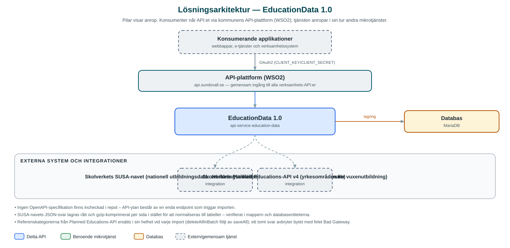

EducationData
Samlar in nationell utbildningsdata från Skolverkets SUSA-navet och Planned Educations-API och lagrar den lokalt som grund för kommunens utbildningstjänster.
Om API:et
EducationData är kommunens insamlingstjänst för nationell utbildningsdata. Ett nattligt jobb hämtar utbildningstillfällen (educationEvents), utbildningsinformation (educationInfos) och utbildningsanordnare (educationProviders) från Skolverkets SUSA-navet, sida för sida, och lagrar varje sidas JSON-svar komprimerat i databasen tillsammans med insamlingsdatum.
Utöver SUSA-navet hämtas referensdata om yrkesområden för vuxenutbildning från Skolverkets Planned Educations-API (v4). Referenskategorierna ersätts i sin helhet vid varje import.
Tjänsten exponerar ett minimalt API: en endpoint för att manuellt trigga importen utanför schemat. Själva datat konsumeras av andra tjänster som läser direkt ur den insamlade databasen – EducationData fungerar som ett lokalt, versionsdaterat mellanlager mot de nationella källorna.
Det här gör API:et
- Nattlig import från SUSA-navet – Hämtar utbildningstillfällen, utbildningsinformation och utbildningsanordnare från Skolverkets SUSA-navet varje natt kl. 02.
- Referensdata om yrkesområden – Hämtar områdeskategorier för vuxenutbildning från Skolverkets Planned Educations-API och ersätter tidigare referensdata.
- Komprimerad lagring per sida – Varje hämtad JSON-sida gzip-komprimeras och lagras med sidnummer och insamlingsdatum.
- Manuell import – Importen kan triggas på begäran via POST /{municipalityId}/scheduler/trigger och körs då asynkront.
API-dokumentation
Ingen incheckad OpenAPI-specifikation hittades i källkodsförrådet; se källkoden för aktuell API-dokumentation.
Teknisk dokumentation
Nedan beskrivs hur tjänsten är uppbyggd, vilka andra tjänster den anropar och vad som krävs för att driftsätta den. Informationen är härledd ur källkoden och dess konfiguration på GitHub.
Arkitektur

API:et är en mikrotjänst (Java 25 (via dept44-föräldern), Spring Boot via kommunens gemensamma tjänsteplattform dept44 (8.0.8), byggd med Maven). Konsumenter når tjänsten via kommunens gemensamma API-plattform (WSO2) på api.sundsvall.se – tjänsten anropas aldrig direkt. Lagring: MariaDB med Flyway-migrationer; lagrar insamlade JSON-sidor (gzip-komprimerade) från SUSA-navet samt referenskategorier. Övriga integrationer som förekommer i koden: Skolverkets SUSA-navet (nationell utbildningsdata: utbildningstillfällen, utbildningsinformation, anordnare), Skolverkets Planned Educations-API v4 (yrkesområden för vuxenutbildning).
Teknikstack
- Språk: Java 25 (via dept44-föräldern)
- Ramverk: Spring Boot via kommunens gemensamma tjänsteplattform dept44 (8.0.8), byggd med Maven
- Databas: MariaDB med Flyway-migrationer; lagrar insamlade JSON-sidor (gzip-komprimerade) från SUSA-navet samt referenskategorier
- Övrigt: OpenFeign-klienter mot Skolverkets API:er, ShedLock för schemalagda jobb
Beroenden till andra mikrotjänster
Inga anrop till andra mikrotjänster hittades i källkodens konfiguration.
Konfiguration och driftsättning
- application.yml med bas-URL:er till SUSA-navet och Planned Educations-API (miljövariabler)
- MariaDB-anslutning; databasschemat versionshanteras med Flyway
- Importjobb (cron, kl. 02 varje natt) med ShedLock-låsning och konfigurerbar sidstorlek (json-size)
- Anrop görs per kommun – municipalityId ingår i API-vägen
Noterbart ur källkoden
- Ingen OpenAPI-specifikation finns incheckad i repot – API-ytan består av en enda endpoint som triggar importen.
- SUSA-navets JSON-svar lagras rått och gzip-komprimerat per sida i stället för att normaliseras till tabeller – verifierat i mappern och databasentiteterna.
- Referenskategorierna från Planned Educations-API ersätts i sin helhet vid varje import (deleteAllInBatch följt av saveAll); ett tomt svar avbryter bytet med felet Bad Gateway.
- README är i stort en ofylld mall (bl.a. platshållartexter i beskrivning och beroendelista) – uppgifterna ovan är härledda ur koden.
Källkod
Källkoden är öppen och finns hos Sundsvalls kommun på GitHub. I källkodsförrådet finns även instruktioner för att klona, konfigurera och starta tjänsten i egen miljö.